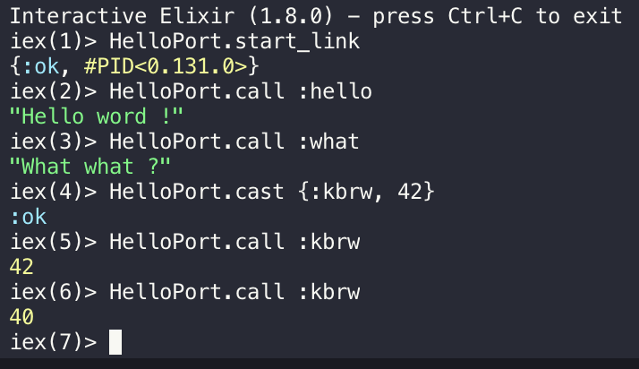

<style>
  .markdown-body {
    box-sizing: border-box;
    min-width: 200px;
    max-width: 980px;
    margin: 0 auto;
    padding: 45px;
  }

  @media (max-width: 767px) {
    .markdown-body {
      padding: 15px;
    }
  }
</style>
<article class="markdown-body">
  <!doctype html>
  <html>
    <head>
      <title>chap7/README.md</title>
      <link
        rel="stylesheet"
        href="../.github-markdown-css/github-markdown.css"
      />
    </head>
    <body>
      <div class="markdown-heading">
        <h1 class="heading-element">Chapter 7 - Reaxt</h1>
        <a
          id="user-content-chapter-7---reaxt"
          class="anchor"
          aria-label="Permalink: Chapter 7 - Reaxt"
          href="#chapter-7---reaxt"
          ><span aria-hidden="true" class="octicon octicon-link"></span
        ></a>
      </div>
      <p><em>Estimated time to finish chapter: 2 days.</em></p>
      <p>
        <a href="https://github.com/kbrw/reaxt"
          ><strong><code>Reaxt</code></strong></a
        >
        is a home-made <code>elixir</code> module. The objective of this module
        is to render our pages on our <strong>server</strong>, allowing users
        with unactivated Javascript to access our website.
        <strong>Reaxt</strong> run a <strong>NodeJS</strong> server that will
        generate the <strong>HTML</strong> pages, using <strong>React</strong>.
        These generated pages are returned to the user on his browser.<br />
        This divides our Javascript execution in two:
      </p>
      <ul>
        <li>a <strong>server side</strong></li>
        <li>a <strong>client side</strong></li>
      </ul>
      <div class="markdown-heading">
        <h2 class="heading-element">
          Step 0 -
          <a href="https://hexdocs.pm/elixir/Port.html" rel="nofollow">Port</a>
          and <a href="https://github.com/kbrw/node_erlastic">Node_Erlastic</a>
        </h2>
        <a
          id="user-content-step-0---port-and-node_erlastic"
          class="anchor"
          aria-label="Permalink: Step 0 - Port and Node_Erlastic"
          href="#step-0---port-and-node_erlastic"
          ><span aria-hidden="true" class="octicon octicon-link"></span
        ></a>
      </div>
      <p>
        This step aims to introduce you to the <code>Port</code> Elixir library,
        that allows <strong>Reaxt</strong> to communicate to a
        <strong>NodeJS</strong> server.<br />
        To help us, we're going to use our home-made library
        <strong>node_erlastic</strong>.
      </p>
      <p><strong>Go read the documentation of both this libraries.</strong></p>
      <div class="markdown-heading">
        <h3 class="heading-element">
          Hello
          <a href="https://hexdocs.pm/elixir/Port.html" rel="nofollow">Port</a>
          !
        </h3>
        <a
          id="user-content-hello-port-"
          class="anchor"
          aria-label="Permalink: Hello Port !"
          href="#hello-port-"
          ><span aria-hidden="true" class="octicon octicon-link"></span
        ></a>
      </div>
      <p>Create a new <code>Mix</code> project in a sub-directory :</p>
      <div class="highlight highlight-source-shell">
        <pre>  $<span class="pl-k">&gt;</span> mix new hello_port --module HelloPort</pre>
      </div>
      <p>
        Our <code>HelloPort</code> module is going to be a really simple
        <code>GenServer</code>.<br />
        Our init function will contain something like this:
      </p>
      <div class="highlight highlight-source-elixir">
        <pre><span class="pl-s1">port</span> <span class="pl-c1">=</span> <span class="pl-v">Port</span><span class="pl-c1">.</span><span class="pl-en">open</span><span class="pl-kos">(</span><span class="pl-kos">{</span><span class="pl-pds">:spawn</span><span class="pl-kos">,</span> <span class="pl-s">'<span class="pl-s1"><span class="pl-kos">#{</span><span class="pl-s1">cmd</span><span class="pl-kos">}</span></span>'</span><span class="pl-kos">}</span><span class="pl-kos">,</span> <span class="pl-kos">[</span><span class="pl-pds">:binary</span><span class="pl-kos">,</span> <span class="pl-pds">:exit_status</span><span class="pl-kos">,</span> <span class="pl-pds">packet: </span><span class="pl-c1">4</span><span class="pl-kos">]</span> <span class="pl-c1">++</span> <span class="pl-s1">opts</span><span class="pl-kos">)</span></pre>
      </div>
      <ul>
        <li>
          <code>Port</code> allows us to <code>:spawn</code> a new OS process,
          and talk to it
          <ul>
            <li>
              Here, it will spawn the OS process using the
              <code>cmd</code> parameter
              <ul>
                <li>
                  <em
                    >Example: if we send "node test.js" as the cmd parameter, it
                    will spawn a node server using the script test.js</em
                  >
                </li>
              </ul>
            </li>
            <li>I will let you check the meaning of the options</li>
          </ul>
        </li>
        <li>
          We bind it to <code>port</code>, that will be our internal GenServer
          state
        </li>
      </ul>
      <p>
        To communicate with our <code>NodeJS</code> server, we're going to send
        it <strong>binary data</strong>. To achieve that, we will use the
        <code>:erlang.term_to_binary/1</code> function.
      </p>
      <p>
        Here is how we're going to send data to our
        <code>node_erlastic</code> server:
      </p>
      <div class="highlight highlight-source-elixir">
        <pre>  <span class="pl-en">send</span><span class="pl-kos">(</span><span class="pl-s1">port</span><span class="pl-kos">,</span> <span class="pl-kos">{</span><span class="pl-s1">self</span><span class="pl-kos">,</span> <span class="pl-kos">{</span><span class="pl-pds">:command</span><span class="pl-kos">,</span> <span class="pl-v">:erlang</span><span class="pl-c1">.</span><span class="pl-en">term_to_binary</span><span class="pl-kos">(</span><span class="pl-s1">term</span><span class="pl-kos">)</span><span class="pl-kos">}</span><span class="pl-kos">}</span><span class="pl-kos">)</span></pre>
      </div>
      <ul>
        <li><code>port</code> is our GenServer internal state</li>
        <li>
          <code>:command</code> is used to tell our
          <code>node_erlastic</code> that we're sending it a command
        </li>
        <li>
          the <code>term</code> is our real command
          <ul>
            <li>
              <em
                >Example:
                <code>GenServer.cast HelloPort, {:my_command, 42</code>}</em
              >
              <ul>
                <li>
                  Here <code>{:my_command, 42}</code> is our <code>term</code>
                </li>
              </ul>
            </li>
          </ul>
        </li>
      </ul>
      <p>
        We will also need to receive data, especially for our
        <code>handle_call/3</code> function. To achieve that, we will use the
        <code>receive</code> function.<br />
        <strong
          >I will not show you how to do it, take a look at
          <a href="https://github.com/kbrw/node_erlastic">node_erlastic</a> and
          the
          <a href="https://hexdocs.pm/elixir/Kernel.html" rel="nofollow"
            >Kernel documentation</a
          >.</strong
        >
      </p>
      <p>
        We should be able to create our <code>GenServer</code> using this
        syntax:
      </p>
      <div class="highlight highlight-source-elixir">
        <pre><span class="pl-v">GenServer</span><span class="pl-c1">.</span><span class="pl-en">start_link</span><span class="pl-kos">(</span><span class="pl-v">HelloPort</span><span class="pl-kos">,</span> <span class="pl-kos">{</span><span class="pl-s">"node hello.js"</span><span class="pl-kos">,</span> <span class="pl-c1">0</span><span class="pl-kos">,</span> <span class="pl-pds">cd: </span><span class="pl-s">"/path/to/proj"</span><span class="pl-kos">}</span><span class="pl-kos">,</span> <span class="pl-pds">name: </span><span class="pl-v">Hello</span><span class="pl-kos">)</span></pre>
      </div>
      <hr />
      <p><strong>Exercise:</strong></p>
      <ul>
        <li>
          Using the
          <a href="https://github.com/kbrw/node_erlastic">node_erlastic</a>
          documentation, create a file named <code>hello.js</code> that will
          allow us to perform some actions from our
          <code>HelloPort</code> GenServer
          <ul>
            <li>
              When sending <strong>call</strong> with the command
              <code>:hello</code>, the <strong>node server</strong> should
              answer <code>Hello world!</code>. Your <code>call</code> will
              return this message.
            </li>
          </ul>
        </li>
        <li>
          Invent other use cases for the <code>cast</code> and
          <code>call</code>, have some fun !
        </li>
      </ul>
      <p>
        <a
          target="_blank"
          rel="noopener noreferrer"
          href="../img/hello_port.png"
          ></a>
      </p>
      <hr />
      <div class="markdown-heading">
        <h2 class="heading-element">Step 1 - Install Reaxt dependencies</h2>
        <a
          id="user-content-step-1---install-reaxt-dependencies"
          class="anchor"
          aria-label="Permalink: Step 1 - Install Reaxt dependencies"
          href="#step-1---install-reaxt-dependencies"
          ><span aria-hidden="true" class="octicon octicon-link"></span
        ></a>
      </div>
      <p>
        <strong>Reaxt</strong> works exactly like what you did in the previous
        step.
      </p>
      <p><strong>There is no magic !</strong></p>
      <div class="markdown-heading">
        <h3 class="heading-element">Mix dependencies</h3>
        <a
          id="user-content-mix-dependencies"
          class="anchor"
          aria-label="Permalink: Mix dependencies"
          href="#mix-dependencies"
          ><span aria-hidden="true" class="octicon octicon-link"></span
        ></a>
      </div>
      <p>
        First, let's install <strong><code>Reaxt</code></strong> dependencies in
        our <strong>mix</strong> project.
      </p>
      <div class="highlight highlight-source-elixir">
        <pre><span class="pl-k">def</span> <span class="pl-en">project</span> <span class="pl-k">do</span> 
  <span class="pl-kos">[</span>
    <span class="pl-s1">...</span><span class="pl-kos">,</span>
    <span class="pl-pds">compilers: </span><span class="pl-kos">[</span><span class="pl-pds">:reaxt_webpack</span><span class="pl-kos">]</span> <span class="pl-c1">++</span> <span class="pl-v">Mix</span><span class="pl-c1">.</span><span class="pl-en">compilers</span>
  <span class="pl-kos">]</span>
<span class="pl-k">end</span> 

<span class="pl-k">defp</span> <span class="pl-en">deps</span> <span class="pl-k">do</span>
  <span class="pl-kos">[</span>
    <span class="pl-kos">{</span><span class="pl-pds">:reaxt</span><span class="pl-kos">,</span> <span class="pl-pds">tag: </span><span class="pl-s">"v4.0.2"</span><span class="pl-kos">,</span> <span class="pl-pds">github: </span><span class="pl-s">"kbrw/reaxt"</span><span class="pl-kos">}</span><span class="pl-kos">,</span>
    <span class="pl-s1">...</span>
  <span class="pl-kos">]</span>
<span class="pl-k">end</span></pre>
      </div>
      <div class="markdown-heading">
        <h3 class="heading-element">Web server</h3>
        <a
          id="user-content-web-server"
          class="anchor"
          aria-label="Permalink: Web server"
          href="#web-server"
          ><span aria-hidden="true" class="octicon octicon-link"></span
        ></a>
      </div>
      <p>
        Now we have to install our <strong>server side</strong> js in our
        <code>web/</code> directory.<br />
        First, we will install the <code>npm</code> dependencies required by
        <code>Reaxt</code>. For that, we will need to make a special
        <code>tar</code> package for npm.
      </p>
      <div class="highlight highlight-source-shell">
        <pre>mix deps.get
<span class="pl-c1">cd</span> ./deps/reaxt/priv/
tar -czf reaxt.tgz commonjs_reaxt/
mv reaxt.tgz ../../../web
<span class="pl-c1">cd</span> ../../../web
npm install reaxt.tgz --save-dev </pre>
      </div>
      <p>
        All this is already done by the mix task in
        <code>reaxt/lib/tasks.ex</code> (<strong
          >I recommend you to read this file</strong
        >).
      </p>
      <div class="highlight highlight-source-elixir">
        <pre><span class="pl-en">mix</span> <span class="pl-s1">npm</span><span class="pl-c1">.</span><span class="pl-en">install</span> </pre>
      </div>
      <p>
        The server side now needs <code>webpack</code> as a dependency. So, we
        need to move it from <code>devDependencies</code> to
        <code>dependencies</code> (if it's not already the case).
      </p>
      <div class="markdown-heading">
        <h2 class="heading-element">Step 2 - Configure the build</h2>
        <a
          id="user-content-step-2---configure-the-build"
          class="anchor"
          aria-label="Permalink: Step 2 - Configure the build"
          href="#step-2---configure-the-build"
          ><span aria-hidden="true" class="octicon octicon-link"></span
        ></a>
      </div>
      <p>
        Now that we have all the dependencies, we will need to configure
        <code>reaxt</code>, using the file <code>config.exs</code>.<br />
        <strong
          >I recommand you to have a look at <code>reaxt</code> source in
          <code>deps/reaxt</code>.</strong
        >
      </p>
      <p>Let's update our <code>config/config.exs</code> file:</p>
      <div class="highlight highlight-source-elixir">
        <pre><span class="pl-en">config</span> <span class="pl-pds">:reaxt</span><span class="pl-kos">,</span> <span class="pl-kos">[</span>
  <span class="pl-pds">otp_app: </span><span class="pl-pds">:tutokbrwstack</span><span class="pl-kos">,</span>
  <span class="pl-pds">hot: </span><span class="pl-c1">false</span><span class="pl-kos">,</span>
  <span class="pl-pds">pool_size: </span><span class="pl-c1">3</span><span class="pl-kos">,</span>
  <span class="pl-pds">global_config: </span><span class="pl-kos">%</span><span class="pl-kos">{</span><span class="pl-kos">}</span>
<span class="pl-kos">]</span></pre>
      </div>
      <p>In this configuration:</p>
      <ul>
        <li>
          <code>hot</code> means hot reload (a script that will reload your page
          if you do some modification on it). If you want to activate it, you
          set this option to true and generate <code>webpack/client.js</code>
        </li>
        <li>
          <code>pool_size</code> represents the number of
          <strong><code>GenServer</code></strong> started by
          <a
            href="https://elixirschool.com/en/lessons/libraries/poolboy/"
            rel="nofollow"
            ><code>:poolboy</code></a
          >
        </li>
        <li>
          <code>global_config</code> is the <strong>Reaxt</strong> general
          configuration
        </li>
      </ul>
      <p>
        Now, we need to provide a rule to compile the server side of our
        application.<br />
        Thus, we will need to update our
        <code>webpack.config.js</code> file.<br />
        The configuration now needs to be splited between the
        <strong>client</strong> and the <strong>server</strong> side
        configurations.
      </p>
      <p>
        The <code>module.exports</code> configuration became the
        <code>client_config</code> variable:
      </p>
      <div class="highlight highlight-source-js">
        <pre><span class="pl-k">var</span> <span class="pl-s1">client_config</span> <span class="pl-c1">=</span> <span class="pl-kos">{</span>
  <span class="pl-c1">devtool</span>: <span class="pl-s">'source-map'</span><span class="pl-kos">,</span>
  <span class="pl-c1">optimization</span>: <span class="pl-kos">{</span>
    <span class="pl-c1">splitChunks</span>: <span class="pl-kos">{</span><span class="pl-c1">cacheGroups</span>: <span class="pl-kos">{</span><span class="pl-c1">styles</span>: <span class="pl-kos">{</span><span class="pl-c1">name</span>: <span class="pl-s">'styles'</span><span class="pl-kos">,</span> <span class="pl-c1">test</span>: <span class="pl-pds"><span class="pl-c1">/</span>\.css$<span class="pl-c1">/</span></span> <span class="pl-kos">,</span> <span class="pl-c1">chunks</span>: <span class="pl-s">'all'</span><span class="pl-kos">,</span> <span class="pl-c1">enforce</span>: <span class="pl-c1">true</span><span class="pl-kos">}</span><span class="pl-kos">}</span><span class="pl-kos">}</span><span class="pl-kos">,</span>
    <span class="pl-c1">minimizer</span>: <span class="pl-kos">[</span><span class="pl-s">`...`</span><span class="pl-kos">,</span> <span class="pl-k">new</span> <span class="pl-v">CssMinimizerPlugin</span><span class="pl-kos">(</span><span class="pl-kos">)</span><span class="pl-kos">]</span>
  <span class="pl-kos">}</span><span class="pl-kos">,</span>
  <span class="pl-c1">plugins</span>: <span class="pl-kos">[</span><span class="pl-k">new</span> <span class="pl-v">MiniCssExtractPlugin</span><span class="pl-kos">(</span><span class="pl-kos">{</span><span class="pl-c1">insert</span>: <span class="pl-s">""</span><span class="pl-kos">,</span> <span class="pl-c1">filename</span>: <span class="pl-s">"[name].css"</span><span class="pl-kos">}</span><span class="pl-kos">)</span><span class="pl-kos">]</span><span class="pl-kos">,</span>
  <span class="pl-c1">entry</span>: <span class="pl-s">"reaxt/client_entry_addition"</span><span class="pl-kos">,</span>
   <span class="pl-c1">output</span>: <span class="pl-kos">{</span> 
    <span class="pl-c1">path</span>: <span class="pl-s1">path</span><span class="pl-kos">.</span><span class="pl-en">join</span><span class="pl-kos">(</span><span class="pl-s1">__dirname</span><span class="pl-kos">,</span> <span class="pl-s">'../priv/static'</span> <span class="pl-kos">)</span><span class="pl-kos">,</span>
    <span class="pl-c1">filename</span>: <span class="pl-s">'[name].[fullhash].js'</span><span class="pl-kos">,</span> 
    <span class="pl-c1">chunkFilename</span>: <span class="pl-s">'chunk/client.[chunkhash].js'</span><span class="pl-kos">,</span>
    <span class="pl-c1">publicPath</span>: <span class="pl-s">'/public/'</span>
  <span class="pl-kos">}</span><span class="pl-kos">,</span>
  <span class="pl-c1">module</span>: <span class="pl-kos">{</span>
    <span class="pl-c1">rules</span>: <span class="pl-kos">[</span>
      <span class="pl-kos">{</span>
        <span class="pl-c1">test</span>: <span class="pl-pds"><span class="pl-c1">/</span>.js?$<span class="pl-c1">/</span></span><span class="pl-kos">,</span>
        <span class="pl-c1">use</span>: <span class="pl-kos">{</span>
          <span class="pl-c1">loader</span>: <span class="pl-s">'babel-loader'</span><span class="pl-kos">,</span>
          <span class="pl-c1">options</span>: <span class="pl-kos">{</span>
            <span class="pl-c1">presets</span>: <span class="pl-kos">[</span>
              <span class="pl-kos">[</span><span class="pl-s">"@babel/preset-env"</span><span class="pl-kos">,</span> <span class="pl-kos">{</span> <span class="pl-s">"targets"</span>: <span class="pl-s">"defaults"</span> <span class="pl-kos">}</span><span class="pl-kos">]</span><span class="pl-kos">,</span>
              <span class="pl-s">"@babel/preset-react"</span><span class="pl-kos">,</span>
              <span class="pl-kos">[</span><span class="pl-s">"@kbrw/jsxz"</span><span class="pl-kos">,</span> <span class="pl-kos">{</span> <span class="pl-c1">dir</span>: <span class="pl-s">'webflow'</span> <span class="pl-kos">}</span><span class="pl-kos">]</span>
            <span class="pl-kos">]</span>
          <span class="pl-kos">}</span>
        <span class="pl-kos">}</span>
        <span class="pl-s1">exclude</span>: <span class="pl-c1">/</span><span class="pl-s1">node_modules</span><span class="pl-c1">/</span>
      <span class="pl-kos">}</span>
    <span class="pl-kos">]</span>
  <span class="pl-kos">}</span>
<span class="pl-kos">}</span></pre>
      </div>
      <p>
        We removed the use of <code>MiniCssExtractPlugin.loader</code> in the
        module rules because our <code>server_config</code> will copy the
        <code>client_config</code>, and the server must not handle the CSS
        loader. We will add it later to our <code>client_config</code>.
      </p>
      <p>
        Then we create the server configuration which will be used by our node
        server:
      </p>
      <div class="highlight highlight-source-js">
        <pre><span class="pl-k">var</span> <span class="pl-s1">server_config</span> <span class="pl-c1">=</span> <span class="pl-v">Object</span><span class="pl-kos">.</span><span class="pl-en">assign</span><span class="pl-kos">(</span><span class="pl-v">Object</span><span class="pl-kos">.</span><span class="pl-en">assign</span><span class="pl-kos">(</span><span class="pl-kos">{</span><span class="pl-kos">}</span><span class="pl-kos">,</span><span class="pl-s1">client_config</span><span class="pl-kos">)</span><span class="pl-kos">,</span><span class="pl-kos">{</span>
  <span class="pl-c1">target</span>: <span class="pl-s">"node"</span><span class="pl-kos">,</span>
  <span class="pl-c1">entry</span>: <span class="pl-s">"reaxt/react_server"</span><span class="pl-kos">,</span>
  <span class="pl-c1">output</span>: <span class="pl-kos">{</span>    
    <span class="pl-c1">path</span>: <span class="pl-s1">path</span><span class="pl-kos">.</span><span class="pl-en">join</span><span class="pl-kos">(</span><span class="pl-s1">__dirname</span><span class="pl-kos">,</span> <span class="pl-s">'../priv/react_servers'</span><span class="pl-kos">)</span><span class="pl-kos">,</span> <span class="pl-c">//typical output on the default directory served by Plug.Static</span>
    <span class="pl-c1">filename</span>: <span class="pl-s">'server.js'</span> <span class="pl-c">//dynamic name for long term caching, or code splitting, use WebPack.file_of(:main) to get it</span>
    <span class="pl-s1">chunkFilename</span>: <span class="pl-s">'chunk/server.[id].js'</span>
  <span class="pl-kos">}</span><span class="pl-kos">,</span>
<span class="pl-kos">}</span><span class="pl-kos">)</span>

<span class="pl-c">// optimisation : ONLY EMIT files for client compilation, all file-loader should not emit files on server compilation </span>
<span class="pl-s1">server_config</span><span class="pl-kos">.</span><span class="pl-c1">module</span> <span class="pl-c1">=</span> <span class="pl-kos">{</span><span class="pl-c1">rules</span>: <span class="pl-s1">server_config</span><span class="pl-kos">.</span><span class="pl-c1">module</span><span class="pl-kos">.</span><span class="pl-c1">rules</span><span class="pl-kos">.</span><span class="pl-en">map</span><span class="pl-kos">(</span> <span class="pl-s1">rule</span> <span class="pl-c1">=&gt;</span> <span class="pl-kos">{</span>
  <span class="pl-k">return</span> <span class="pl-kos">{</span>...<span class="pl-s1">rule</span><span class="pl-kos">,</span>
    <span class="pl-c1">use</span>: <span class="pl-kos">(</span><span class="pl-kos">(</span><span class="pl-v">Array</span><span class="pl-kos">.</span><span class="pl-en">isArray</span><span class="pl-kos">(</span><span class="pl-s1">rule</span><span class="pl-kos">.</span><span class="pl-c1">use</span><span class="pl-kos">)</span><span class="pl-kos">)</span> ? <span class="pl-s1">rule</span><span class="pl-kos">.</span><span class="pl-c1">use</span> : <span class="pl-kos">[</span><span class="pl-s1">rule</span><span class="pl-kos">.</span><span class="pl-c1">use</span><span class="pl-kos">]</span><span class="pl-kos">)</span><span class="pl-kos">.</span><span class="pl-en">map</span><span class="pl-kos">(</span> <span class="pl-s1">use</span> <span class="pl-c1">=&gt;</span> <span class="pl-kos">{</span>
            <span class="pl-k">return</span> <span class="pl-kos">{</span>...<span class="pl-s1">use</span><span class="pl-kos">,</span> <span class="pl-c1">options</span>: <span class="pl-kos">(</span><span class="pl-s1">use</span><span class="pl-kos">.</span><span class="pl-c1">loader</span> <span class="pl-c1">===</span> <span class="pl-s">"file-loader"</span><span class="pl-kos">)</span> ? <span class="pl-kos">{</span>...<span class="pl-s1">use</span><span class="pl-kos">.</span><span class="pl-c1">options</span><span class="pl-kos">,</span> <span class="pl-c1">emitFile</span>: <span class="pl-c1">false</span><span class="pl-kos">}</span> : <span class="pl-s1">use</span><span class="pl-kos">.</span><span class="pl-c1">options</span> <span class="pl-kos">}</span>
          <span class="pl-kos">}</span><span class="pl-kos">)</span>
  <span class="pl-kos">}</span>
<span class="pl-kos">}</span><span class="pl-kos">)</span><span class="pl-kos">}</span></pre>
      </div>
      <p>We handle the CSS loaders :</p>
      <div class="highlight highlight-source-js">
        <pre><span class="pl-c">// css management : MiniCssExtractPlugin on client build but ignore on serverside</span>
<span class="pl-s1">client_config</span><span class="pl-kos">.</span><span class="pl-c1">module</span><span class="pl-kos">.</span><span class="pl-c1">rules</span><span class="pl-kos">.</span><span class="pl-en">push</span><span class="pl-kos">(</span>
     <span class="pl-kos">{</span> <span class="pl-c1">test</span>: <span class="pl-pds"><span class="pl-c1">/</span>\.(css)$<span class="pl-c1">/</span></span><span class="pl-kos">,</span> <span class="pl-c1">use</span>: <span class="pl-kos">[</span><span class="pl-kos">{</span><span class="pl-c1">loader</span>: <span class="pl-v">MiniCssExtractPlugin</span><span class="pl-kos">.</span><span class="pl-c1">loader</span><span class="pl-kos">}</span><span class="pl-kos">,</span> <span class="pl-kos">{</span> <span class="pl-c1">loader</span>: <span class="pl-s">"css-loader"</span> <span class="pl-kos">}</span><span class="pl-kos">]</span> <span class="pl-kos">}</span><span class="pl-kos">)</span>
<span class="pl-s1">server_config</span><span class="pl-kos">.</span><span class="pl-c1">module</span><span class="pl-kos">.</span><span class="pl-c1">rules</span><span class="pl-kos">.</span><span class="pl-en">push</span><span class="pl-kos">(</span>
     <span class="pl-kos">{</span> <span class="pl-c1">test</span>: <span class="pl-pds"><span class="pl-c1">/</span>\.(css)$<span class="pl-c1">/</span></span><span class="pl-kos">,</span> <span class="pl-c1">use</span>: <span class="pl-kos">[</span><span class="pl-kos">{</span> <span class="pl-c1">loader</span>: <span class="pl-s">"null-loader"</span> <span class="pl-kos">}</span><span class="pl-kos">]</span> <span class="pl-kos">}</span><span class="pl-kos">)</span></pre>
      </div>
      <p>
        Finally we need to export the module as done in the previous
        <code>webpack.config.js</code> file :
      </p>
      <div class="highlight highlight-source-js">
        <pre><span class="pl-smi">module</span><span class="pl-kos">.</span><span class="pl-c1">exports</span> <span class="pl-c1">=</span> <span class="pl-kos">[</span><span class="pl-s1">client_config</span><span class="pl-kos">,</span> <span class="pl-s1">server_config</span><span class="pl-kos">]</span></pre>
      </div>
      <p>
        And move our <code>app.js</code> in a sub directory named
        <code>components</code>, as well as update the paths to your css in your
        <code>app.js</code> (because you just moved the <code>app.js</code>).
      </p>
      <p>Now compile your server with</p>
      <div class="highlight highlight-source-shell">
        <pre>mix webpack.compile</pre>
      </div>
      <p>
        <em
          ><strong
            >If you don't understand some part of this configuration, go read
            the documentation of Reaxt on
            <a href="https://github.com/kbrw/reaxt">Github</a>.</strong
          ></em
        >
      </p>
      <div class="markdown-heading">
        <h2 class="heading-element">Step 3 - Script modification</h2>
        <a
          id="user-content-step-3---script-modification"
          class="anchor"
          aria-label="Permalink: Step 3 - Script modification"
          href="#step-3---script-modification"
          ><span aria-hidden="true" class="octicon octicon-link"></span
        ></a>
      </div>
      <div class="markdown-heading">
        <h3 class="heading-element">Our Elixir app</h3>
        <a
          id="user-content-our-elixir-app"
          class="anchor"
          aria-label="Permalink: Our Elixir app"
          href="#our-elixir-app"
          ><span aria-hidden="true" class="octicon octicon-link"></span
        ></a>
      </div>
      <p>
        Let's now update our main application function to set the correct
        environment for <strong><code>Reaxt</code></strong
        >.
      </p>
      <div class="highlight highlight-source-elixir">
        <pre><span class="pl-k">defmodule</span> <span class="pl-v">TutoKBRWStack</span> <span class="pl-k">do</span> 
  <span class="pl-k">def</span> <span class="pl-en">start</span><span class="pl-kos">(</span><span class="pl-c">_</span><span class="pl-kos">,</span> <span class="pl-c">_</span><span class="pl-kos">)</span> <span class="pl-k">do</span> 
    <span class="pl-s1">...</span>
    <span class="pl-v">Application</span><span class="pl-c1">.</span><span class="pl-en">put_env</span><span class="pl-kos">(</span>
      <span class="pl-pds">:reaxt</span><span class="pl-kos">,</span><span class="pl-pds">:global_config</span><span class="pl-kos">,</span>
      <span class="pl-v">Map</span><span class="pl-c1">.</span><span class="pl-en">merge</span><span class="pl-kos">(</span>
        <span class="pl-v">Application</span><span class="pl-c1">.</span><span class="pl-en">get_env</span><span class="pl-kos">(</span><span class="pl-pds">:reaxt</span><span class="pl-kos">,</span><span class="pl-pds">:global_config</span><span class="pl-kos">)</span><span class="pl-kos">,</span> <span class="pl-kos">%</span><span class="pl-kos">{</span><span class="pl-pds">localhost: </span><span class="pl-s">"http://0.0.0.0:4001"</span><span class="pl-kos">}</span>
      <span class="pl-kos">)</span>
    <span class="pl-kos">)</span>
    <span class="pl-v">Reaxt</span><span class="pl-c1">.</span><span class="pl-en">reload</span>
    <span class="pl-s1">...</span>
  <span class="pl-k">end</span>
<span class="pl-k">end</span> </pre>
      </div>
      <p>
        This scripts provide to <strong><code>Reaxt</code></strong> its working
        environment and also put a callback on the URL in case the website get
        some modifications: this will automatically reload your browser once
        some modification have been done on your front's code.
      </p>
      <div class="markdown-heading">
        <h3 class="heading-element">Our JS app</h3>
        <a
          id="user-content-our-js-app"
          class="anchor"
          aria-label="Permalink: Our JS app"
          href="#our-js-app"
          ><span aria-hidden="true" class="octicon octicon-link"></span
        ></a>
      </div>
      <p>
        We need to submit 2 different execution flows depending on the side the
        code is being executed (server / client).<br />
        If the execution is occuring on the server side, we will download the
        <code>remoteProps</code>, but we won't render the server.<br />
        Whereas on the client side, we need to render the objects.
      </p>
      <p>
        To isolate the two flows, we have to export two functions that
        <strong>Reaxt</strong> will use. Let's add them to our
        <code>app.js</code>:
      </p>
      <div class="highlight highlight-source-js">
        <pre><span class="pl-k">export</span> <span class="pl-k">default</span> <span class="pl-kos">{</span>
  <span class="pl-en">reaxt_server_render</span><span class="pl-kos">(</span><span class="pl-s1">params</span><span class="pl-kos">,</span> <span class="pl-s1">render</span><span class="pl-kos">)</span><span class="pl-kos">{</span>
    <span class="pl-en">inferPropsChange</span><span class="pl-kos">(</span><span class="pl-s1">params</span><span class="pl-kos">.</span><span class="pl-c1">path</span><span class="pl-kos">,</span> <span class="pl-s1">params</span><span class="pl-kos">.</span><span class="pl-c1">query</span><span class="pl-kos">,</span> <span class="pl-s1">params</span><span class="pl-kos">.</span><span class="pl-c1">cookies</span><span class="pl-kos">)</span>
      <span class="pl-kos">.</span><span class="pl-en">then</span><span class="pl-kos">(</span><span class="pl-kos">(</span><span class="pl-kos">)</span><span class="pl-c1">=&gt;</span><span class="pl-kos">{</span>
        <span class="pl-s1">render</span><span class="pl-kos">(</span><span class="pl-c1">&lt;</span><span class="pl-ent">Child</span> <span class="pl-kos">{</span>...<span class="pl-s1">browserState</span><span class="pl-kos">}</span><span class="pl-c1">/</span><span class="pl-c1">&gt;</span><span class="pl-kos">)</span>
      <span class="pl-kos">}</span><span class="pl-kos">,</span><span class="pl-kos">(</span><span class="pl-s1">err</span><span class="pl-kos">)</span><span class="pl-c1">=&gt;</span><span class="pl-kos">{</span>
        <span class="pl-s1">render</span><span class="pl-kos">(</span><span class="pl-c1">&lt;</span><span class="pl-ent">ErrorPage</span> <span class="pl-c1">message</span><span class="pl-c1">=</span><span class="pl-kos">{</span><span class="pl-s">"Not Found :"</span> <span class="pl-c1">+</span> <span class="pl-s1">err</span><span class="pl-kos">.</span><span class="pl-c1">url</span> <span class="pl-kos">}</span> <span class="pl-c1">code</span><span class="pl-c1">=</span><span class="pl-kos">{</span><span class="pl-s1">err</span><span class="pl-kos">.</span><span class="pl-c1">http_code</span><span class="pl-kos">}</span><span class="pl-c1">/</span><span class="pl-c1">&gt;</span><span class="pl-kos">,</span> <span class="pl-s1">err</span><span class="pl-kos">.</span><span class="pl-c1">http_code</span><span class="pl-kos">)</span>
      <span class="pl-kos">}</span><span class="pl-kos">)</span>
  <span class="pl-kos">}</span><span class="pl-kos">,</span>
  <span class="pl-en">reaxt_client_render</span><span class="pl-kos">(</span><span class="pl-s1">initialProps</span><span class="pl-kos">,</span> <span class="pl-s1">render</span><span class="pl-kos">)</span><span class="pl-kos">{</span>
    <span class="pl-s1">browserState</span> <span class="pl-c1">=</span> <span class="pl-s1">initialProps</span>
    <span class="pl-v">Link</span><span class="pl-kos">.</span><span class="pl-c1">renderFunc</span> <span class="pl-c1">=</span> <span class="pl-s1">render</span>
    <span class="pl-smi">window</span><span class="pl-kos">.</span><span class="pl-en">addEventListener</span><span class="pl-kos">(</span><span class="pl-s">"popstate"</span><span class="pl-kos">,</span> <span class="pl-kos">(</span><span class="pl-kos">)</span><span class="pl-c1">=&gt;</span><span class="pl-kos">{</span> <span class="pl-v">Link</span><span class="pl-kos">.</span><span class="pl-en">onPathChange</span><span class="pl-kos">(</span><span class="pl-kos">)</span> <span class="pl-kos">}</span><span class="pl-kos">)</span>
    <span class="pl-v">Link</span><span class="pl-kos">.</span><span class="pl-en">onPathChange</span><span class="pl-kos">(</span><span class="pl-kos">)</span>
  <span class="pl-kos">}</span>
<span class="pl-kos">}</span></pre>
      </div>
      <ul>
        <li>
          <code>reaxt_server_render</code> will be called in our
          <code>server.js</code>
        </li>
        <li>
          <code>reaxt_client_render</code> will be called in our
          <code>client.js</code>
        </li>
        <li>
          The <code>Link</code> object is a new
          <strong>React Class</strong> that we are going to create
          <ul>
            <li>
              Its job is to handle all things relative to links
              <ul>
                <li>
                  change of paths (our <code>onPathChange</code>), navigation
                  (our <code>GoTo</code>), etc.
                </li>
              </ul>
            </li>
          </ul>
        </li>
        <li>
          the <code>inferPropsChange</code> contains all the previous code that
          was in <code>onPatchChange</code> that concerns the
          <strong>remote props</strong>.
        </li>
      </ul>
      <div class="markdown-heading">
        <h4 class="heading-element">inferPropsChange</h4>
        <a
          id="user-content-inferpropschange"
          class="anchor"
          aria-label="Permalink: inferPropsChange"
          href="#inferpropschange"
          ><span aria-hidden="true" class="octicon octicon-link"></span
        ></a>
      </div>
      <p>
        Let's first attack by our new <code>inferPropsChange</code> function.
      </p>
      <div class="highlight highlight-source-js">
        <pre><span class="pl-k">var</span> <span class="pl-s1">browserState</span> <span class="pl-c1">=</span> <span class="pl-kos">{</span><span class="pl-kos">}</span>

<span class="pl-k">function</span> <span class="pl-en">inferPropsChange</span><span class="pl-kos">(</span><span class="pl-s1">path</span><span class="pl-kos">,</span><span class="pl-s1">query</span><span class="pl-kos">,</span><span class="pl-s1">cookies</span><span class="pl-kos">)</span><span class="pl-kos">{</span> <span class="pl-c">// the second part of the onPathChange function have been moved here</span>
  <span class="pl-s1">browserState</span> <span class="pl-c1">=</span> <span class="pl-kos">{</span>
    ...<span class="pl-s1">browserState</span><span class="pl-kos">,</span>
    <span class="pl-c1">path</span>: <span class="pl-s1">path</span><span class="pl-kos">,</span> <span class="pl-c1">qs</span>: <span class="pl-s1">query</span><span class="pl-kos">,</span>
    <span class="pl-c1">Link</span>: <span class="pl-v">Link</span><span class="pl-kos">,</span>
    <span class="pl-c1">Child</span>: <span class="pl-v">Child</span>
  <span class="pl-kos">}</span>

  <span class="pl-k">var</span> <span class="pl-s1">route</span><span class="pl-kos">,</span> <span class="pl-s1">routeProps</span>
  <span class="pl-k">for</span><span class="pl-kos">(</span><span class="pl-k">var</span> <span class="pl-s1">key</span> <span class="pl-k">in</span> <span class="pl-s1">routes</span><span class="pl-kos">)</span> <span class="pl-kos">{</span>
    <span class="pl-s1">routeProps</span> <span class="pl-c1">=</span> <span class="pl-s1">routes</span><span class="pl-kos">[</span><span class="pl-s1">key</span><span class="pl-kos">]</span><span class="pl-kos">.</span><span class="pl-en">match</span><span class="pl-kos">(</span><span class="pl-s1">path</span><span class="pl-kos">,</span> <span class="pl-s1">query</span><span class="pl-kos">)</span>
    <span class="pl-k">if</span><span class="pl-kos">(</span><span class="pl-s1">routeProps</span><span class="pl-kos">)</span><span class="pl-kos">{</span>
      <span class="pl-s1">route</span> <span class="pl-c1">=</span> <span class="pl-s1">key</span>
      <span class="pl-k">break</span>
    <span class="pl-kos">}</span>
  <span class="pl-kos">}</span>

  <span class="pl-k">if</span><span class="pl-kos">(</span><span class="pl-c1">!</span><span class="pl-s1">route</span><span class="pl-kos">)</span><span class="pl-kos">{</span>
    <span class="pl-k">return</span> <span class="pl-k">new</span> <span class="pl-v">Promise</span><span class="pl-kos">(</span> <span class="pl-kos">(</span><span class="pl-s1">res</span><span class="pl-kos">,</span><span class="pl-s1">reject</span><span class="pl-kos">)</span> <span class="pl-c1">=&gt;</span> <span class="pl-s1">reject</span><span class="pl-kos">(</span><span class="pl-kos">{</span><span class="pl-c1">http_code</span>: <span class="pl-c1">404</span><span class="pl-kos">}</span><span class="pl-kos">)</span><span class="pl-kos">)</span>
  <span class="pl-kos">}</span>
  <span class="pl-s1">browserState</span> <span class="pl-c1">=</span> <span class="pl-kos">{</span>
    ...<span class="pl-s1">browserState</span><span class="pl-kos">,</span>
    ...<span class="pl-s1">routeProps</span><span class="pl-kos">,</span>
    <span class="pl-c1">route</span>: <span class="pl-s1">route</span>
  <span class="pl-kos">}</span>

  <span class="pl-k">return</span> <span class="pl-en">addRemoteProps</span><span class="pl-kos">(</span><span class="pl-s1">browserState</span><span class="pl-kos">)</span><span class="pl-kos">.</span><span class="pl-en">then</span><span class="pl-kos">(</span>
    <span class="pl-kos">(</span><span class="pl-s1">props</span><span class="pl-kos">)</span><span class="pl-c1">=&gt;</span><span class="pl-kos">{</span>
      <span class="pl-s1">browserState</span> <span class="pl-c1">=</span> <span class="pl-s1">props</span>
    <span class="pl-kos">}</span><span class="pl-kos">)</span>
<span class="pl-kos">}</span></pre>
      </div>
      <p>
        This is pretty straightforward, no need to explain the code. If you
        don't understand it, I suggest you go back to
        <a href="./chap5.html">chapter 5</a>.
      </p>
      <div class="markdown-heading">
        <h4 class="heading-element">Our new Link class</h4>
        <a
          id="user-content-our-new-link-class"
          class="anchor"
          aria-label="Permalink: Our new Link class"
          href="#our-new-link-class"
          ><span aria-hidden="true" class="octicon octicon-link"></span
        ></a>
      </div>
      <p>
        The <code>Link</code> class handles everything related to our pages
        navigation and window URL.<br />
        Let's move our <code>onPathChange</code> and <code>GoTo</code> functions
        into it:
      </p>
      <div class="highlight highlight-source-js">
        <pre><span class="pl-k">var</span> <span class="pl-v">Link</span> <span class="pl-c1">=</span> <span class="pl-en">createReactClass</span><span class="pl-kos">(</span><span class="pl-kos">{</span>
  <span class="pl-c1">statics</span>: <span class="pl-kos">{</span>
    <span class="pl-c1">renderFunc</span>: <span class="pl-c1">null</span><span class="pl-kos">,</span> <span class="pl-c">//render function to use (differently set depending if we are server sided or client sided)</span>
    <span class="pl-en">GoTo</span><span class="pl-kos">(</span><span class="pl-s1">route</span><span class="pl-kos">,</span> <span class="pl-s1">params</span><span class="pl-kos">,</span> <span class="pl-s1">query</span><span class="pl-kos">)</span><span class="pl-kos">{</span><span class="pl-c">// function used to change the path of our browser</span>
      <span class="pl-k">var</span> <span class="pl-s1">path</span> <span class="pl-c1">=</span> <span class="pl-s1">routes</span><span class="pl-kos">[</span><span class="pl-s1">route</span><span class="pl-kos">]</span><span class="pl-kos">.</span><span class="pl-en">path</span><span class="pl-kos">(</span><span class="pl-s1">params</span><span class="pl-kos">)</span>
      <span class="pl-k">var</span> <span class="pl-s1">qs</span> <span class="pl-c1">=</span> <span class="pl-v">Qs</span><span class="pl-kos">.</span><span class="pl-en">stringify</span><span class="pl-kos">(</span><span class="pl-s1">query</span><span class="pl-kos">)</span>
      <span class="pl-k">var</span> <span class="pl-s1">url</span> <span class="pl-c1">=</span> <span class="pl-s1">path</span> <span class="pl-c1">+</span> <span class="pl-kos">(</span><span class="pl-s1">qs</span> <span class="pl-c1">==</span> <span class="pl-s">''</span> ? <span class="pl-s">''</span> : <span class="pl-s">'?'</span> <span class="pl-c1">+</span> <span class="pl-s1">qs</span><span class="pl-kos">)</span>
      <span class="pl-s1">history</span><span class="pl-kos">.</span><span class="pl-en">pushState</span><span class="pl-kos">(</span><span class="pl-kos">{</span><span class="pl-kos">}</span><span class="pl-kos">,</span><span class="pl-s">""</span><span class="pl-kos">,</span><span class="pl-s1">url</span><span class="pl-kos">)</span>
      <span class="pl-v">Link</span><span class="pl-kos">.</span><span class="pl-en">onPathChange</span><span class="pl-kos">(</span><span class="pl-kos">)</span>
    <span class="pl-kos">}</span><span class="pl-kos">,</span>
    <span class="pl-en">onPathChange</span><span class="pl-kos">(</span><span class="pl-kos">)</span><span class="pl-kos">{</span> <span class="pl-c">//Updated onPathChange</span>
      <span class="pl-k">var</span> <span class="pl-s1">path</span> <span class="pl-c1">=</span> <span class="pl-s1">location</span><span class="pl-kos">.</span><span class="pl-c1">pathname</span>
      <span class="pl-k">var</span> <span class="pl-s1">qs</span> <span class="pl-c1">=</span> <span class="pl-v">Qs</span><span class="pl-kos">.</span><span class="pl-en">parse</span><span class="pl-kos">(</span><span class="pl-s1">location</span><span class="pl-kos">.</span><span class="pl-c1">search</span><span class="pl-kos">.</span><span class="pl-en">slice</span><span class="pl-kos">(</span><span class="pl-c1">1</span><span class="pl-kos">)</span><span class="pl-kos">)</span>
      <span class="pl-k">var</span> <span class="pl-s1">cookies</span> <span class="pl-c1">=</span> <span class="pl-v">Cookie</span><span class="pl-kos">.</span><span class="pl-en">parse</span><span class="pl-kos">(</span><span class="pl-smi">document</span><span class="pl-kos">.</span><span class="pl-c1">cookie</span><span class="pl-kos">)</span>
      <span class="pl-en">inferPropsChange</span><span class="pl-kos">(</span><span class="pl-s1">path</span><span class="pl-kos">,</span> <span class="pl-s1">qs</span><span class="pl-kos">,</span> <span class="pl-s1">cookies</span><span class="pl-kos">)</span><span class="pl-kos">.</span><span class="pl-en">then</span><span class="pl-kos">(</span> <span class="pl-c">//inferPropsChange download the new props if the url query changed as done previously</span>
        <span class="pl-kos">(</span><span class="pl-kos">)</span><span class="pl-c1">=&gt;</span><span class="pl-kos">{</span>
          <span class="pl-v">Link</span><span class="pl-kos">.</span><span class="pl-en">renderFunc</span><span class="pl-kos">(</span><span class="pl-c1">&lt;</span><span class="pl-ent">Child</span> <span class="pl-kos">{</span>...<span class="pl-s1">browserState</span><span class="pl-kos">}</span><span class="pl-c1">/</span><span class="pl-c1">&gt;</span><span class="pl-kos">)</span> <span class="pl-c">//if we are on server side we render </span>
        <span class="pl-kos">}</span><span class="pl-kos">,</span><span class="pl-kos">(</span><span class="pl-kos">{</span>http_code<span class="pl-kos">}</span><span class="pl-kos">)</span><span class="pl-c1">=&gt;</span><span class="pl-kos">{</span>
          <span class="pl-v">Link</span><span class="pl-kos">.</span><span class="pl-en">renderFunc</span><span class="pl-kos">(</span><span class="pl-c1">&lt;</span><span class="pl-ent">ErrorPage</span> <span class="pl-c1">message</span><span class="pl-c1">=</span><span class="pl-kos">{</span><span class="pl-s">"Not Found"</span><span class="pl-kos">}</span> <span class="pl-c1">code</span><span class="pl-c1">=</span><span class="pl-kos">{</span><span class="pl-s1">http_code</span><span class="pl-kos">}</span><span class="pl-c1">/</span><span class="pl-c1">&gt;</span><span class="pl-kos">,</span> <span class="pl-s1">http_code</span><span class="pl-kos">)</span> <span class="pl-c">//idem</span>
        <span class="pl-kos">}</span>
      <span class="pl-kos">)</span>
    <span class="pl-kos">}</span><span class="pl-kos">,</span>
    <span class="pl-en">LinkTo</span>: <span class="pl-kos">(</span><span class="pl-s1">route</span><span class="pl-kos">,</span><span class="pl-s1">params</span><span class="pl-kos">,</span><span class="pl-s1">query</span><span class="pl-kos">)</span><span class="pl-c1">=&gt;</span> <span class="pl-kos">{</span>
      <span class="pl-k">var</span> <span class="pl-s1">qs</span> <span class="pl-c1">=</span> <span class="pl-v">Qs</span><span class="pl-kos">.</span><span class="pl-en">stringify</span><span class="pl-kos">(</span><span class="pl-s1">query</span><span class="pl-kos">)</span>
      <span class="pl-k">return</span> <span class="pl-s1">routes</span><span class="pl-kos">[</span><span class="pl-s1">route</span><span class="pl-kos">]</span><span class="pl-kos">.</span><span class="pl-en">path</span><span class="pl-kos">(</span><span class="pl-s1">params</span><span class="pl-kos">)</span> <span class="pl-c1">+</span><span class="pl-kos">(</span><span class="pl-kos">(</span><span class="pl-s1">qs</span><span class="pl-c1">==</span><span class="pl-s">''</span><span class="pl-kos">)</span> ? <span class="pl-s">''</span> : <span class="pl-kos">(</span><span class="pl-s">'?'</span><span class="pl-c1">+</span><span class="pl-s1">qs</span><span class="pl-kos">)</span><span class="pl-kos">)</span>
    <span class="pl-kos">}</span>
  <span class="pl-kos">}</span>
<span class="pl-kos">}</span><span class="pl-kos">)</span></pre>
      </div>
      <ul>
        <li>
          Both <code>onPatchChange</code> and <code>GoTo</code> should be
          familiar to you
        </li>
        <li>
          <code>LinkTo</code> is used to return the expected URL, like in
          <code>GoTo</code> except it returns it instead of pushing it to the
          browser
        </li>
      </ul>
      <p>
        Some browsers do not support <strong>Javascript</strong>, or block it.
        To fix that, we will render all our links using the
        <code>render</code> function of our <strong>Link</strong> Class:
      </p>
      <div class="highlight highlight-source-js">
        <pre><span class="pl-en">onClick</span><span class="pl-kos">(</span><span class="pl-s1">ev</span><span class="pl-kos">)</span><span class="pl-kos"></span> <span class="pl-kos">{</span>
    <span class="pl-s1">ev</span><span class="pl-kos">.</span><span class="pl-en">preventDefault</span><span class="pl-kos">(</span><span class="pl-kos">)</span><span class="pl-kos">;</span>
    <span class="pl-v">Link</span><span class="pl-kos">.</span><span class="pl-en">GoTo</span><span class="pl-kos">(</span><span class="pl-smi">this</span><span class="pl-kos">.</span><span class="pl-c1">props</span><span class="pl-kos">.</span><span class="pl-c1">to</span><span class="pl-kos">,</span><span class="pl-smi">this</span><span class="pl-kos">.</span><span class="pl-c1">props</span><span class="pl-kos">.</span><span class="pl-c1">params</span><span class="pl-kos">,</span><span class="pl-smi">this</span><span class="pl-kos">.</span><span class="pl-c1">props</span><span class="pl-kos">.</span><span class="pl-c1">query</span><span class="pl-kos">)</span><span class="pl-kos">;</span>
  <span class="pl-kos">}</span><span class="pl-kos">,</span>
  <span class="pl-en">render</span> <span class="pl-kos">(</span><span class="pl-kos">)</span><span class="pl-kos"></span><span class="pl-kos">{</span><span class="pl-c">//render a &lt;Link&gt; this way transform link into href path which allows on browser without javascript to work perfectly on the website</span>
    <span class="pl-k">return</span> <span class="pl-kos">(</span>
      <span class="pl-c1">&lt;</span><span class="pl-ent">a</span> <span class="pl-c1">href</span><span class="pl-c1">=</span><span class="pl-kos">{</span><span class="pl-v">Link</span><span class="pl-kos">.</span><span class="pl-en">LinkTo</span><span class="pl-kos">(</span><span class="pl-smi">this</span><span class="pl-kos">.</span><span class="pl-c1">props</span><span class="pl-kos">.</span><span class="pl-c1">to</span><span class="pl-kos">,</span><span class="pl-smi">this</span><span class="pl-kos">.</span><span class="pl-c1">props</span><span class="pl-kos">.</span><span class="pl-c1">params</span><span class="pl-kos">,</span><span class="pl-smi">this</span><span class="pl-kos">.</span><span class="pl-c1">props</span><span class="pl-kos">.</span><span class="pl-c1">query</span><span class="pl-kos">)</span><span class="pl-kos">}</span> <span class="pl-c1">onClick</span><span class="pl-c1">=</span><span class="pl-kos">{</span><span class="pl-smi">this</span><span class="pl-kos">.</span><span class="pl-c1">onClick</span><span class="pl-kos">}</span><span class="pl-c1">&gt;</span>
        <span class="pl-kos">{</span><span class="pl-smi">this</span><span class="pl-kos">.</span><span class="pl-c1">props</span><span class="pl-kos">.</span><span class="pl-c1">children</span><span class="pl-kos">}</span>
      <span class="pl-c1">&lt;</span><span class="pl-c1">/</span><span class="pl-ent">a</span><span class="pl-c1">&gt;</span>
    <span class="pl-kos">)</span>
  <span class="pl-kos">}</span></pre>
      </div>
      <div class="markdown-heading">
        <h4 class="heading-element">Handle the localhost property</h4>
        <a
          id="user-content-handle-the-localhost-property"
          class="anchor"
          aria-label="Permalink: Handle the localhost property"
          href="#handle-the-localhost-property"
          ><span aria-hidden="true" class="octicon octicon-link"></span
        ></a>
      </div>
      <p>
        Our server endpoint is different if we are on the client or on the
        server.
      </p>
      <p>Let's change the HTTP function to work on the server side:</p>
      <div class="highlight highlight-source-js">
        <pre><span class="pl-k">var</span> <span class="pl-s1">localhost</span> <span class="pl-c1">=</span> <span class="pl-en">require</span><span class="pl-kos">(</span><span class="pl-s">'reaxt/config'</span><span class="pl-kos">)</span><span class="pl-kos">.</span><span class="pl-c1">localhost</span>
<span class="pl-k">var</span> <span class="pl-v">XMLHttpRequest</span> <span class="pl-c1">=</span> <span class="pl-en">require</span><span class="pl-kos">(</span><span class="pl-s">"xhr2"</span><span class="pl-kos">)</span> <span class="pl-c">// External XmlHTTPReq on browser, xhr2 on server</span>
<span class="pl-k">var</span> <span class="pl-c1">HTTP</span> <span class="pl-c1">=</span> <span class="pl-k">new</span> <span class="pl-kos">(</span><span class="pl-k">function</span><span class="pl-kos">(</span><span class="pl-kos">)</span><span class="pl-kos">{</span>
    <span class="pl-kos">[</span>...<span class="pl-kos">]</span>
  <span class="pl-smi">this</span><span class="pl-kos">.</span><span class="pl-c1">req</span> <span class="pl-c1">=</span> <span class="pl-kos">(</span><span class="pl-s1">method</span><span class="pl-kos">,</span><span class="pl-s1">url</span><span class="pl-kos">,</span><span class="pl-s1">data</span><span class="pl-kos">)</span><span class="pl-c1">=&gt;</span><span class="pl-kos">{</span>
    <span class="pl-k">return</span> <span class="pl-k">new</span> <span class="pl-v">Promise</span><span class="pl-kos">(</span><span class="pl-kos">(</span><span class="pl-s1">resolve</span><span class="pl-kos">,</span> <span class="pl-s1">reject</span><span class="pl-kos">)</span> <span class="pl-c1">=&gt;</span> <span class="pl-kos">{</span>
      <span class="pl-k">var</span> <span class="pl-s1">req</span> <span class="pl-c1">=</span> <span class="pl-k">new</span> <span class="pl-v">XMLHttpRequest</span><span class="pl-kos">(</span><span class="pl-kos">)</span>
      <span class="pl-s1">url</span> <span class="pl-c1">=</span> <span class="pl-kos">(</span><span class="pl-k">typeof</span> <span class="pl-smi">window</span> <span class="pl-c1">!==</span> <span class="pl-s">'undefined'</span><span class="pl-kos">)</span> ? <span class="pl-s1">url</span> : <span class="pl-s1">localhost</span><span class="pl-c1">+</span><span class="pl-s1">url</span>

    <span class="pl-kos">[</span>...<span class="pl-kos">]</span></pre>
      </div>
      <p>
        Here, the API address is furnished to the script when it is running on
        the server: the relative path doesn't work on the server side.
      </p>
      <div class="markdown-heading">
        <h2 class="heading-element">
          Step 4 - Change our index.html to layout.html.eex
        </h2>
        <a
          id="user-content-step-4---change-our-indexhtml-to-layouthtmleex"
          class="anchor"
          aria-label="Permalink: Step 4 - Change our index.html to layout.html.eex"
          href="#step-4---change-our-indexhtml-to-layouthtmleex"
          ><span aria-hidden="true" class="octicon octicon-link"></span
        ></a>
      </div>
      <p>
        In our new <strong>Webpack</strong> configuration our generated
        <code>client.js</code> contains a hash in his name.<br />
        To help us face that, we will generate our <code>index.html</code> file
        via <strong>Reaxt</strong>.
      </p>
      <p>
        <strong
          >We will use the
          <a
            href="https://hexdocs.pm/eex/EEx.html#function_from_file/5"
            rel="nofollow"
            ><strong><code>EEx</code></strong></a
          >
          module.</strong
        >
      </p>
      <ul>
        <li>Copy the <code>layout.html.eex</code> into your web directory.</li>
        <li>
          In your <strong><code>Router</code></strong> module, change your
          <code>Plug.Static</code>
        </li>
      </ul>
      <div class="highlight highlight-source-elixir">
        <pre><span class="pl-en">plug</span> <span class="pl-v">Plug.Static</span><span class="pl-kos">,</span> <span class="pl-pds">at: </span><span class="pl-s">"/public"</span><span class="pl-kos">,</span> <span class="pl-pds">from: </span><span class="pl-pds">:tutokbrwstack</span></pre>
      </div>
      <p>and add</p>
      <div class="highlight highlight-source-elixir">
        <pre><span class="pl-k">require</span> <span class="pl-v">EEx</span>
<span class="pl-v">EEx</span><span class="pl-c1">.</span><span class="pl-en">function_from_file</span> <span class="pl-pds">:defp</span><span class="pl-kos">,</span> <span class="pl-pds">:layout</span><span class="pl-kos">,</span> <span class="pl-s">"web/layout.html.eex"</span><span class="pl-kos">,</span> <span class="pl-kos">[</span><span class="pl-pds">:render</span><span class="pl-kos">]</span></pre>
      </div>
      <p>
        Finally, we need to return the generated code from
        <strong><code>Reaxt</code></strong> to the client.
      </p>
      <div class="highlight highlight-source-elixir">
        <pre>  <span class="pl-en">get</span> <span class="pl-c">_</span> <span class="pl-k">do</span>
    <span class="pl-s1">conn</span> <span class="pl-c1">=</span> <span class="pl-en">fetch_query_params</span><span class="pl-kos">(</span><span class="pl-s1">conn</span><span class="pl-kos">)</span>
    <span class="pl-s1">render</span> <span class="pl-c1">=</span> <span class="pl-v">Reaxt</span><span class="pl-c1">.</span><span class="pl-en">render!</span><span class="pl-kos">(</span><span class="pl-pds">:app</span><span class="pl-kos">,</span> <span class="pl-kos">%</span><span class="pl-kos">{</span><span class="pl-pds">path: </span><span class="pl-s1">conn</span><span class="pl-c1">.</span><span class="pl-en">request_path</span><span class="pl-kos">,</span> <span class="pl-pds">cookies: </span><span class="pl-s1">conn</span><span class="pl-c1">.</span><span class="pl-en">cookies</span><span class="pl-kos">,</span> <span class="pl-pds">query: </span><span class="pl-s1">conn</span><span class="pl-c1">.</span><span class="pl-en">params</span><span class="pl-kos">}</span><span class="pl-kos">,</span><span class="pl-c1">30_000</span><span class="pl-kos">)</span>
    <span class="pl-en">send_resp</span><span class="pl-kos">(</span><span class="pl-en">put_resp_header</span><span class="pl-kos">(</span><span class="pl-s1">conn</span><span class="pl-kos">,</span> <span class="pl-s">"content-type"</span><span class="pl-kos">,</span> <span class="pl-s">"text/html;charset=utf-8"</span><span class="pl-kos">)</span><span class="pl-kos">,</span> <span class="pl-s1">render</span><span class="pl-c1">.</span><span class="pl-en">param</span> <span class="pl-c1">||</span> <span class="pl-c1">200</span><span class="pl-kos">,</span> <span class="pl-en">layout</span><span class="pl-kos">(</span><span class="pl-s1">render</span><span class="pl-kos">)</span><span class="pl-kos">)</span>
  <span class="pl-k">end</span></pre>
      </div>
      <hr />
      <div class="markdown-heading">
        <h2 class="heading-element">Question time !</h2>
        <a
          id="user-content-question-time-"
          class="anchor"
          aria-label="Permalink: Question time !"
          href="#question-time-"
          ><span aria-hidden="true" class="octicon octicon-link"></span
        ></a>
      </div>
      <ul>
        <li>What is <strong>Reaxt</strong> ?</li>
        <li>Why do we use server-side rendering ?</li>
        <li>
          What does the <strong>EEx</strong> name stands for, and what are its
          use case ?
        </li>
      </ul>
      <hr />
      <p>
        <a href="chap6.html">Prev Chapter</a> <strong>Chapter 7</strong>
        <a href="chap8.html">Next Chapter</a>
      </p>
    </body>
  </html>
</article>
